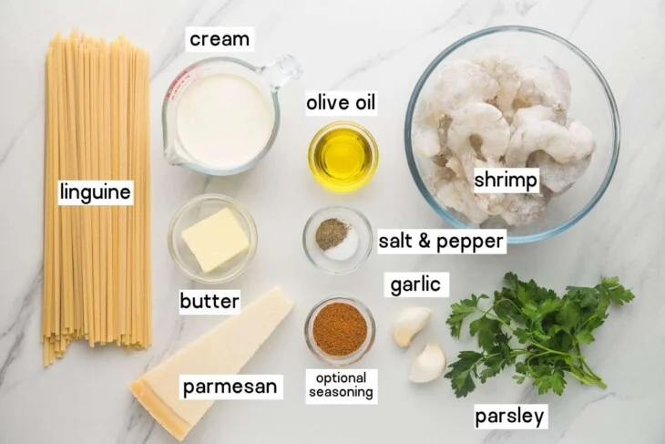
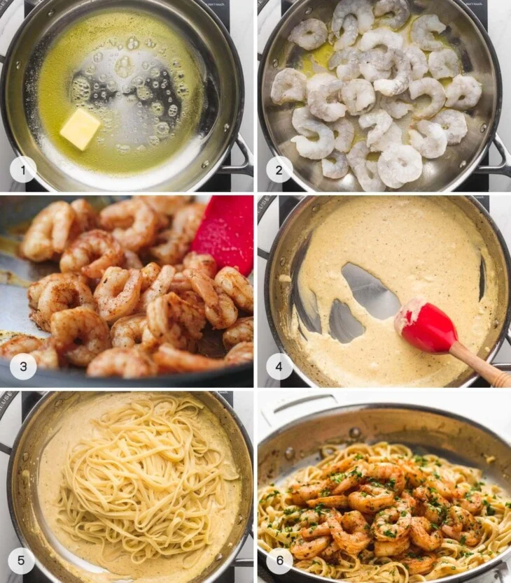

Creamy Garlic Shrimp Pasta
Home

Description
This is a delicous dish that comes together in under 30 minutes anyone can make on a weeknight. It uses just a few ingredients.
Using just pasta, shrimp, heavy cream, and some aromatics, we can make a wonderful dish the whole family will love.
Ingredients

- 8 oz. Linguini
- 16 oz shrimp (thawed, shells and tail removed)
- 1/2 cup of heavy cream
- Optional: One tablespoon of Old Bay Seasoning
- Salt
- Pepper
- one minced garlic clove
- Aproximiately 1/2 a cup of grated parmesan cheese
Steps

- Bring a large pot of salted water to boil.
- Add 8 oz. of linguini to the boiling water and cook according to the packange directions
- While pasta is cooking, heat up a skillet on medium heat. Add butter and oil to skillet
- Put the 1 lbs of shrimp in the skillet. Allow the shrimp to cook for about a minute. Flip shrimp over and add old bay seasoning
along with a pinch of salt.
- Let shrimp cook for about 3 minutes or until done.
- Remove shrimp and set on a plate.
- In the same pan, saute garlic for about 3 minutes until fragrant.
- Add in heavy cream and use spatuala to assist with deglazing pan.
- Add 1/2 cup of parmesan cheese
- Once pasta is finished, reserve one cup of pasta water. Add pasta to skillet.
- mix pasta in skillet with skillet. Add pasta water in as needed to loosen the sauce
- Add shrimp in with pasta and mix togehter allowing shrimp to heat through.
Tips:
- Careful with the salt. A little bit goes a long way.
- It may seem like it's not enough garlic, but adding extra can really overwhelm the dish.